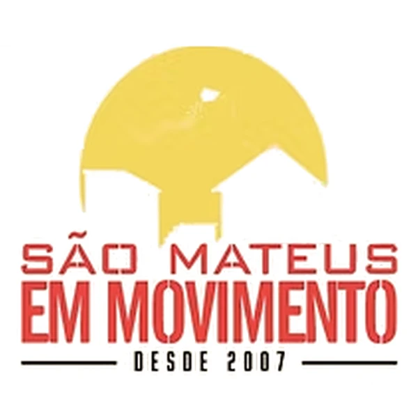

Oficinas artísticas 2026
- MC com Jô Maloupas
- Graffiti com O Cris
- Capoeira com Negotinho
Na sede da associação. Inscrições pelo site.
Ver oficinas (abre em nova aba)
Associação comunitária e sociocultural
Atua na Vila Flávia, em São Mateus, Zona Leste de São Paulo, desde 2007
O São Mateus em Movimento nasceu em 2007 na Vila Flávia, quando Dona Vera cedeu um espaço da própria casa para que seu filho, Negotinho, desse aulas de capoeira e percussão para jovens do bairro. Com o tempo, o espaço se tornou um ponto de cultura e arte, criado para responder à falta de opções de educação, lazer e cultura na região. Hoje a associação promove ações culturais, educacionais, ecológicas e sociais, com oficinas, palestras e um cursinho preparatório gratuito.
Início das atividades na casa de Dona Vera, com aulas de capoeira e percussão. Depois vieram a galeria de arte a céu aberto, o sarau e as rodas de samba.
Reconhecimento como Ponto de Cultura.
Criação do Media Lab, com formação em cultura digital e audiovisual.
Durante a pandemia, distribuiu 170 toneladas de alimentos, 600 botijões de gás e itens de higiene.
Ampliação das oficinas e dos projetos no bairro.
Moradores da Vila Flávia e de São Mateus, com foco em jovens. As oficinas são abertas a pessoas de todas as idades, de iniciantes a experientes.
Oficinas e cursos gratuitos que a associação organiza para os moradores. Para participar, basta se inscrever.
Na sede da associação. Inscrições pelo site.
Ver oficinas (abre em nova aba)Curso preparatório para quem vai prestar vestibular. As próximas inscrições são divulgadas no site da associação.
Ver cursinho (abre em nova aba)A agenda da semana e as novidades são publicadas no Instagram da associação.
Ver Instagram (abre em nova aba)Informações retiradas dos canais oficiais da iniciativa em novembro de 2026.
Contribua com seu tempo e suas habilidades nas oficinas e eventos. Fale com a associação pelo WhatsApp.
Materiais para as oficinas e atividades ajudam a manter os projetos. Combine antes pelo WhatsApp.
Feita diretamente pelos canais oficiais da associação. O Voluntee não recebe doações.
Empresas e coletivos podem apoiar os projetos e ampliar o alcance das ações.
Inscreva-se nas oficinas, palestras e no cursinho gratuito.
Compartilhe as oficinas e eventos com amigos e vizinhos.